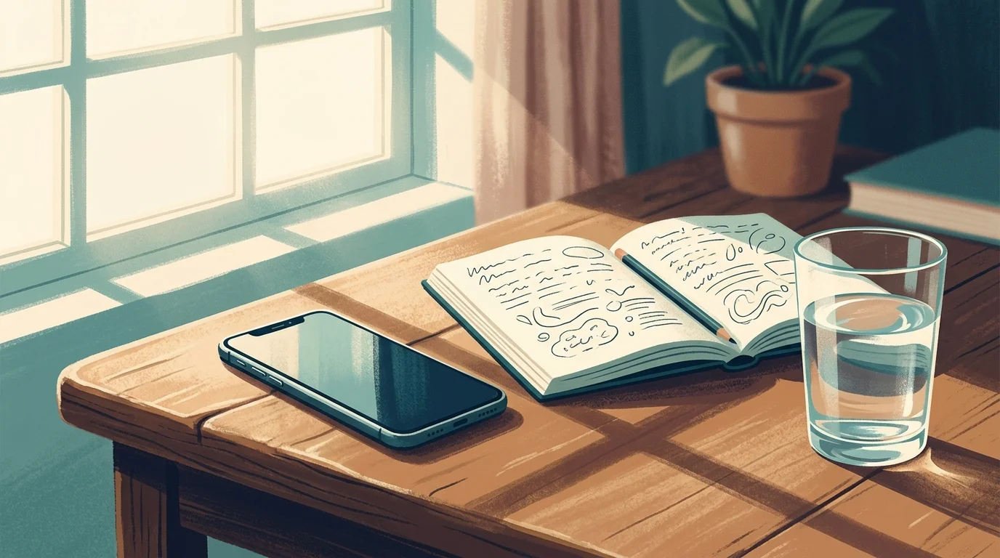
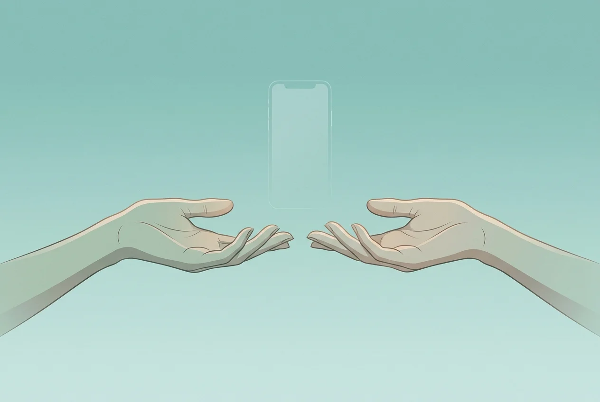
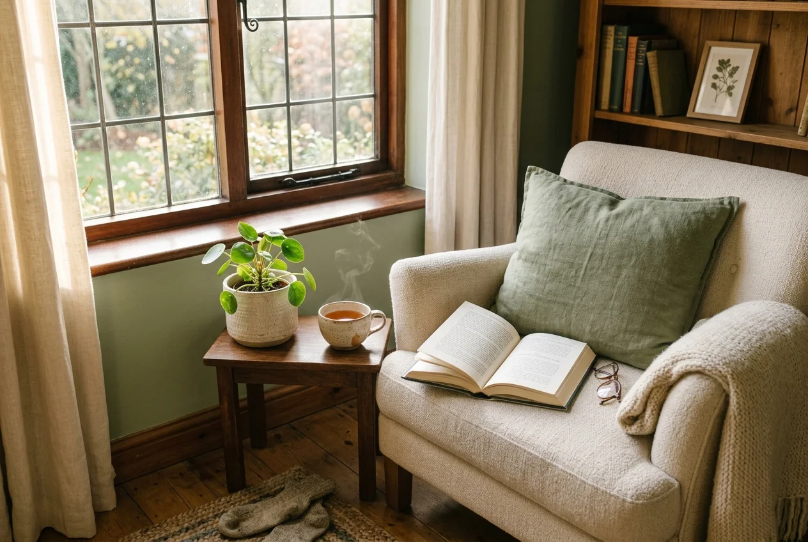

How to Do a 30-Day Digital Declutter (Step-by-Step)
Four weeks. No social media. No infinite scroll. Here's exactly what happens to your brain—and how to come back on your own terms.

You're lying in bed at 11:47 PM. You told yourself you'd stop scrolling at 10. Your eyes ache, your neck is locked at that awful angle, and you've absorbed approximately zero useful information in the last hour and forty-seven minutes. You lock your phone. You pick it up again nine seconds later.
That loop—the promise, the failure, the guilt, the repeat—is what eventually drives people toward a digital declutter. Not because they hate technology. Because they hate what technology has done to their relationship with their own attention.
A 30-day digital declutter is a structured reset where you eliminate all optional technology for 30 days—social media, streaming, compulsive news checking, doomscrolling—and use that space to rediscover what you actually want to spend your time on. It's not a punishment. It's an experiment. And after 30 days, you reintroduce only the tools that genuinely earn their place back in your life.
The concept was popularized by Cal Newport in Digital Minimalism, and it works because it doesn't ask you to be superhuman. It asks you to be curious for four weeks. Here's how to do it without white-knuckling through every day.
Before You Start: Set the Rules
The declutter fails when the boundaries are vague. "I'll use my phone less" is not a rule. It's a wish. You need a clear, binary list of what stays and what goes.
What goes (optional technology): Social media apps and websites—Instagram, TikTok, X, Reddit, Facebook. Streaming services used for passive consumption. YouTube browsing. News sites you check compulsively. Mobile games. Any app where you routinely lose 30+ minutes without intending to.
What stays (essential technology): Work email and Slack. GPS navigation. Texting and calling family and friends. Banking apps. Anything your job literally requires. The test is simple: if removing it would get you fired or endanger someone, it stays.
Write the list down. Put it somewhere visible. On day six, when you convince yourself that "just checking Instagram for messages" is essential, the list will save you from your own rationalizations.
One more thing before day one: tell someone. A partner, a friend, a coworker. Not for accountability theater—but because you'll need at least one person who understands why you're suddenly unreachable on platforms, and who won't take your silence personally.
Week 1: The Withdrawal

Days one through three are surprisingly easy. There's novelty in the experiment. You feel righteous. You notice the cherry blossoms outside your window for the first time this spring.
Days four through seven are when the real withdrawal hits. You'll reach for your phone dozens of times per hour—not because you need anything, but because your basal ganglia have automated the behavior. The reach-unlock-scroll sequence is a habit loop so deeply encoded that it fires before conscious thought can intervene. You'll feel restless. Bored. Agitated in a way that has no obvious cause.
This is normal. This is the point.
What you're feeling is your brain adjusting to a lower level of dopaminergic stimulation. Social media feeds deliver variable-ratio reinforcement—the same unpredictable reward pattern that makes slot machines addictive. When you cut off that supply, your brain notices. It protests. The boredom you're experiencing isn't real boredom; it's the temporary inability to tolerate anything less stimulating than an algorithmically-curated feed.
Survival tactics for week one: Delete the apps entirely—don't just move them to a folder. Log out of web versions. If you need a physical barrier, an app blocker can enforce what willpower can't. Replace the phone-reach habit with something physical: pick up a glass of water, do five pushups, open a book. The replacement doesn't need to be productive. It just needs to interrupt the loop.
Week 2: The Silence
By day eight or nine, something shifts. The compulsive reaching slows. The phantom vibrations in your pocket fade. And in their place comes something unfamiliar: quiet.
Not the quiet of a meditation retreat. The quiet of a mind that isn't constantly processing micro-stimuli. You'll notice it in the shower, in the car, in the ten minutes before sleep. Spaces that used to be filled with content are now just... empty. And that emptiness feels uncomfortable at first.
Research on social media breaks supports what you're experiencing. A randomized controlled trial by Lambert et al. found that participants who took a one-week break from social media showed significant improvements in wellbeing, reduced anxiety, and less depression compared to the control group. The break itself rewires default patterns.
Use this week to observe, not optimize. Notice what you gravitate toward when scrolling isn't an option. Do you want to call a friend? Walk somewhere without headphones? Cook something that takes longer than microwaving? These impulses are data. They're telling you what your pre-algorithm self actually valued.
Week two practice: Keep a brief evening journal. Three sentences. What did you do with the time you reclaimed? How did it feel? What surprised you? This log becomes essential in week four when you're deciding what to let back in.
Week 3: Rediscovering Analog Leisure

This is the week most digital declutter guides skip, and it's the most important one.
Cal Newport argues—and the research backs him up—that the reason most social media detoxes fail isn't because people can't quit. It's because they quit without replacing the need that social media was filling. You can't subtract an hour of scrolling and leave a void. Voids get filled by default, and the default is always the path of least resistance: picking the phone back up.
Week three is about intentionally filling that space with what Newport calls "high-quality leisure"—activities that demand real engagement from your brain and body. Not passive consumption. Not half-attention multitasking. Activities where you're building, making, moving, or connecting in ways that leave you feeling genuinely satisfied rather than hollowed out.
This looks different for everyone. Some people rediscover reading for pleasure—not scanning articles, but losing themselves in a novel for two hours. Some pick up an instrument they abandoned in college. Others start running, sketching, or having actual phone calls instead of texting threads. The common thread is that the activity requires your full attention and gives back something that passive scrolling never could: a sense of competence, connection, or craft.
A growing body of research on boredom and creativity suggests that the discomfort you felt in weeks one and two was actually productive. When your brain isn't saturated with external stimuli, it defaults to what psychologists call the "default mode network"—the neural circuitry responsible for daydreaming, self-reflection, and creative problem-solving. Scrolling suppresses this network. Boredom activates it.
Week three challenge: Commit to one analog activity you'll do at least three times this week. Not something aspirational. Something you'll actually enjoy enough to repeat. The bar is low on purpose—the goal is to build a replacement habit, not to become a Renaissance painter.
Week 4: The Intentional Reintroduction
This is where a 30-day digital declutter diverges from a standard detox. A detox implies you're flushing poison and going back to normal. A declutter implies you're redesigning the system. Week four is the redesign.
Do not reinstall everything on day 31 and call it done. That's a relapse, not a reintroduction. Instead, go through your elimination list one item at a time and ask three questions:
1. Does this technology directly support something I deeply value? Not "do I sometimes use it for something valuable"—that's a rationalization. Does it directly support a core value? If you value staying connected with close friends, texting or calling supports that. Instagram might occasionally surface a friend's life update, but 90% of your time there is spent on content from strangers.
2. Is this the best way to get that value? Maybe you value keeping up with industry news. But is a Twitter feed the best way to do that, or would a weekly newsletter or a curated RSS reader serve the need without the infinite scroll? The tool matters less than the delivery mechanism.
3. What rules will govern my use? If Instagram passes the first two tests, you don't just reinstall it with no guardrails. You define when, where, and how long. Example: "I check Instagram once per day, after dinner, for 15 minutes maximum, and I only follow people I've met in person." Specificity is the difference between intentional use and a slow slide back to hour-long sessions.
You'll be surprised how few tools survive this filter. Most people reintroduce two or three apps with strict rules and leave the rest deleted permanently. Not because they're exercising extreme discipline—but because after 30 days without them, they genuinely don't miss them.
What Happens After Day 30
The declutter isn't magic. It doesn't permanently rewire your brain in 30 days. What it does is break the automatic loop long enough for you to see the pattern from the outside. You'll notice the pull of the infinite scroll differently now—not as a need, but as a conditioned response you can choose to interrupt.
Some people maintain strict rules indefinitely. Others gradually loosen them and need a reset every few months. Both approaches work, because the value of the declutter isn't the 30 days themselves—it's the awareness that comes from having done them.
The hardest part, honestly, is the transition back. You've built new habits. You've felt what it's like to have your attention belong to you. And then you reinstall one app, and within a week you're back to checking it forty times a day. This is not failure. This is the reality of using products built by thousands of engineers whose job is to recapture your attention.
That's why the most durable approach isn't pure willpower or complete abstinence. It's architectural friction—systems that make the mindless reach slightly harder and the intentional choice slightly easier. A phone that asks you to take a sip of water before opening TikTok. A browser extension that adds a 10-second delay before loading Reddit. A physical alarm clock so your phone doesn't need to be the first thing you see in the morning.
You did 30 days without the scroll. You know what life feels like on the other side. The question now isn't whether you can stay off these apps forever—it's whether you can design a relationship with them that serves you instead of the algorithm. That design starts with small, repeatable friction. And it compounds over time.
Keep the friction after day 30
Sip & Scroll adds a gentle pause before addictive apps—take a sip of water, then scroll intentionally. No lockouts, no guilt. Just a moment to choose.
Download Sip & Scroll